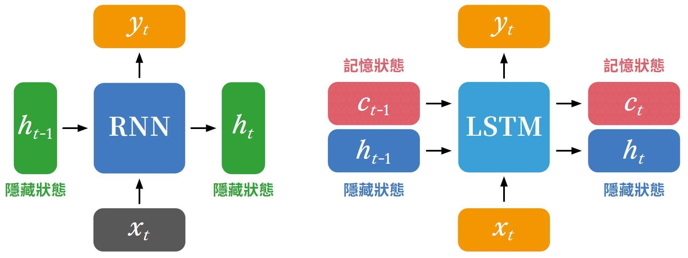
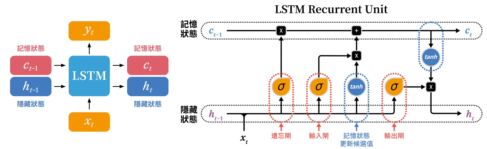
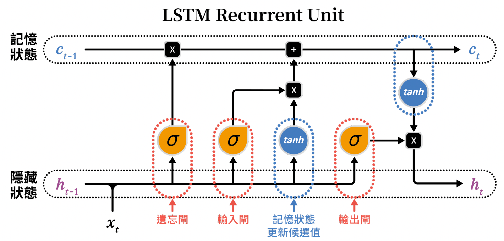
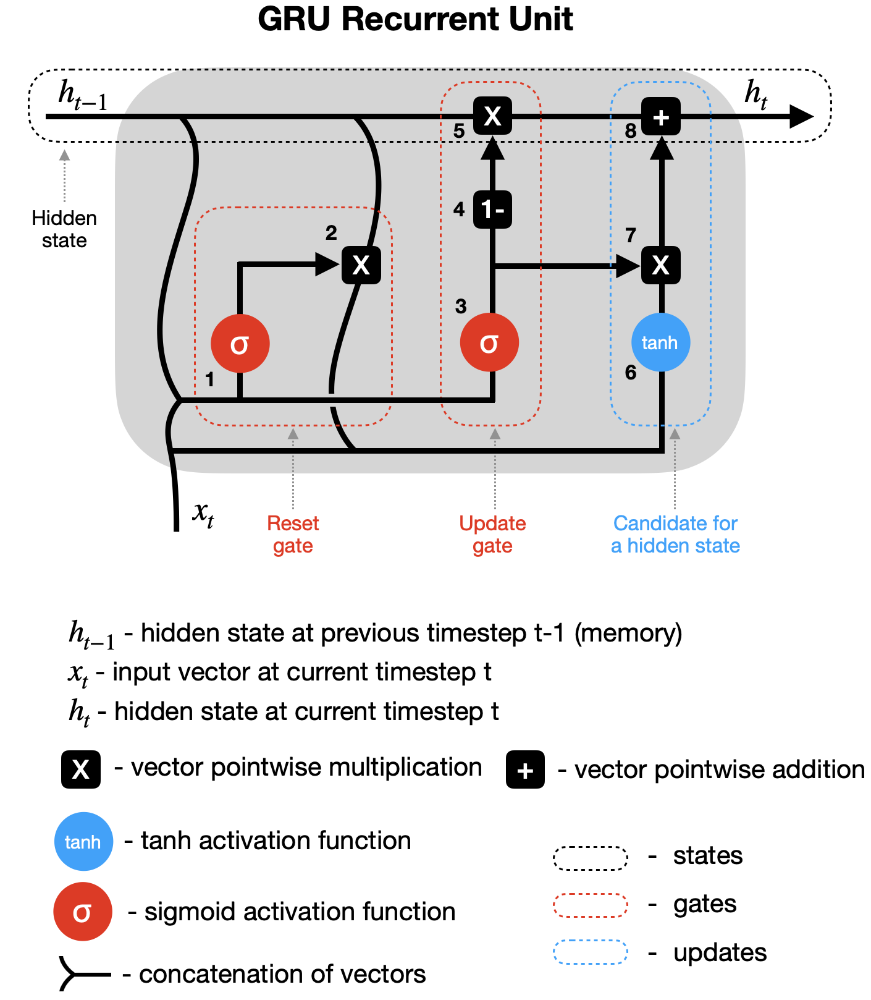

LSTM與GRU
Table of Contents

1. 長期記憶與短期記憶
記憶力是人類智慧的重要組成部分，也是我們賴以生存的關鍵能力之一。有了記憶力，我們才能記住過去的經驗，從中學習並做出更好的決策。例如：火很熱，我們學會了不要觸摸火焰，以免被燒傷；蛇有毒，我們學會了遠離蛇，以免被咬傷。
人類的記憶力可以分為短期記憶和長期記憶兩種。短期記憶是指我們能夠在短時間內記住的信息，例如一早起床後預計要做的事情清單；而長期記憶則是指我們能夠長時間保存的信息，例如我們的童年回憶或學習過的知識。
人工智慧既然從一開始就是以模仿人類智慧為目標，那麼它也需要具備類似的記憶力，才能更好地理解和處理複雜的信息。為了實現這一目標，研究人員開發了各種各樣的神經網路架構，其中最著名的就是循環神經網路（Recurrent Neural Network, RNN）。
但RNN在模仿人類記憶力這方面顯然還不夠完善，特別是在處理長期記憶方面存在一些挑戰。為了解決這些問題，研究人員提出了多種改進方法，其中最成功的就是長短期記憶網路（Long Short-Term Memory, LSTM）。
2. LSTM的設計理念
LSTM（Long Short-Term Memory）也是一種遞迴神經網路（RNN），他也有記憶能力，但它把原本RNN的「記憶單元」做了改良，拆成了「記憶狀態（Cell State）」和「隱藏狀態（Hidden State）」，用來模擬人類的長期記憶和短期記憶；而且LSTM還模仿人類的遺忘機制，設計了三個「閘門（Gates）」來控制資訊的流動，讓模型能夠選擇性地保留或遺忘某些資訊。讓模型可以「忘記」不重要的資訊，專注於重要的資訊，從而提高模型的表現。
RNN的一個主要問題是，當序列變得很長時，它們很難記住遠處的資訊。這是因為在 RNN 中，每個時間點的輸出都是由當前輸入和上一個時間點的輸出共同決定的。這意味著當序列變得很長時，RNN 會遺忘遠處的資訊，導致模型無法很好地理解整個序列。
為了加強這種RNN的「記憶能力」，人們開發各種各樣的變形體，如非常著名的Long Short-term Memory(LSTM)，用於解決「長期及遠距離的依賴關係」。
2.1. LSTM的結構設計
如圖1所示，LSTM將RNN的隱藏狀態拆成兩部份：
- 記憶狀態的變化較慢，能儘量保留先前的記憶，這部份類似於人類的長期記憶。
- 隱藏狀態則隨輸入不同而有較多變化，這部份類似於人類的短期記憶。

Figure 1: RNN v.s. LSTM
由圖2可見，這兩份記憶狀態會同時存在於LSTM的細胞中，兩份記憶狀態看似上下分開獨立，但實際上仍會互相影響與作用。當然，和RNN一樣，每個時間點仍然會有輸入資料(\(x_t\))進入LSTM細胞，並影響這兩份記憶狀態的更新與變化。

Figure 2: LSTM將rnn的隱藏狀態拆成兩部份
在將記憶狀態和隱藏狀態分開之後，LSTM還多了三個閘門來管控資訊的保留與遺忘：遺忘閘（forget gate）、輸入閘（input gate）、輸出閘（output gate），我們就一步步來看看這些閘門的設計與運作機制。
2.2. LSTM細胞結構
圖3為LSTM細胞的結構示意, 除了上、下兩條主要的記憶狀態傳遞路徑外，還有三個閘門分別負責不同的功能：

Figure 3: LSTM Cell
- Forget Gate：又稱遺忘閘，決定目前的記憶狀態有多少要被保留，或是要被遺忘。
- Input Gate：又稱輸入閘，決定目前的輸入資料有多少要被寫入到記憶狀態中。
- Output Gate：又稱輸出閘，決定更新後的記憶狀態有多少要被輸出到隱藏狀態中。
3. LSTM運作流程
首先，LSTM Cell會接收兩個主要的輸入：目前時間點的輸入資料 \(x_t\) 和前一個時間點的隱藏狀態 \(h_{t-1}\)。在此要特別說明的是，這兩個輸入( \(x_t, h_{t-1}\) )並不像之前的RNN一樣直接相加，而是先做串接(concatenate)後，形成 \([h_{t-1},\,x_t]\)。舉例來說，如果
- 前一個時間點的隱藏狀態\(h_{t-1}\) 的內容為：\( [0.1,0.7,−0.3,0.5] \)
- 目前時間點的輸入 \(x_t\) 為：\( [0.2,0.9,−0.4] \)
那麼串接後的結果就是：\( [0.1,0.7,−0.3,0.5,0.2,0.9,−0.4] \)，這個向量接下來會被送往以下4個步驟進行處理：
- 遺忘閘
- 輸入閘
- 更新記憶狀態
- 輸出閘
同一時間，LSTM Cell還會接收前一個時間點的記憶狀態 \(c_{t-1}\)，這個記憶狀態會在後續步驟中和來自遺忘閘與輸入閘的結果進行結合，最終產生更新後的記憶狀態 \(c_t\)，而這個更新後的記憶狀態 \(c_t\) 又會和輸出閘的結果結合，產生目前時間點的隱藏狀態 \(h_t\)。這種設計有點像是我們的長期記憶和短期記憶互相影響、共同作用的過程。
3.1. 遺忘閘
在收到串接後的輸入 \([h_{t-1},\,x_t]\) 後，遺忘閘會決定目前的記憶狀態 \(c_{t-1}\) 要保留多少、遺忘多少。具體來說，這部份是由一個全連接層（fully connected layer）來實現的，這個全連接層對應的權重矩陣為 \(W_f\) ，偏置項為 \(b_f\)。
我們先將串接後的輸入丟進去，然後進行線性變換（乘上權重矩陣 \(W_f\) 並加上偏置項 \(b_f\)），最後再經過一個 sigmoid 啟動函數，將結果轉換成 0 到 1 之間的數值。內部的計算公式如下：
\[ f_t = \sigma\!\bigl(W_f\,[h_{t-1},\,x_t] + b_f\bigr), \]
這裡的 \(W_f\) 是遺忘閘的權重矩陣，\(b_f\) 是偏置項，這兩項都是神經網路在訓練過程中學習到的參數。也許這兩份參數看起來像這樣：
\begin{aligned} W_f &= \begin{bmatrix} 0.12 & -0.08 & 0.05 & 0.10 & -0.02 & 0.07 & -0.04 \\ -0.03 & 0.09 & 0.11 & -0.06 & 0.04 & -0.05 & 0.02 \\ 0.01 & 0.02 & 0.08 & 0.03 & -0.07 & 0.06 & 0.05 \\ -0.10 & 0.04 & 0.03 & 0.02 & 0.09 & -0.01 & 0.08 \end{bmatrix} ,\qquad b_f &= \begin{bmatrix} 0.02\\ -0.03\\ 0.01\\ 0.00 \end{bmatrix} \end{aligned}如果我們就拿這兩個想像出來的參數來計算之前串接後的輸入 \( [0.1,0.7,−0.3,0.5,0.2,0.9,−0.4] \)：則我們會得到以下的結果：
\begin{aligned} z_f &= W_f [h_{t-1}, x_t] + b_f = \begin{bmatrix} 0.086\\ -0.078\\ 0.036\\ -0.004 \end{bmatrix},\\[6pt] f_t &= \sigma(z_f) = \begin{bmatrix} 0.5215\\ 0.4805\\ 0.5090\\ 0.4990 \end{bmatrix} \end{aligned}這個向量 \(f_t\) 的每個份量都介於 0 與 1 之間，它代表的 不是我們要記憶的內容 ，而是 「保留比例」 。等一下我們就會以這份保留比例對目前神經元中的記憶狀態 \(c_{t-1}\) 進行「遺忘」操作。那些被「遺忘」的部分就會被乘上接近 0 的數值，而那些被「保留」的部分則會被乘上接近 1 的數值。被「遺忘」的部分代表神經元認為這些資訊不再重要，可以丟棄；而被「保留」的部分則代表神經元認為這些資訊仍然重要，需要繼續保存下去。
3.2. 輸入閘
處理完遺忘閘後，接下來是輸入閘的部分。
其實，由圖3可以看出，輸入閘和遺忘閘的結構非常相似，都是先將串接後的輸入 \([h_{t-1},\,x_t]\) (也就是剛剛提到的 \( [0.1,0.7,−0.3,0.5,0.2,0.9,−0.4] \))丟進去，然後進行線性變換（乘上權重矩陣並加上偏置項），最後再經過一個 sigmoid 啟動函數，將結果轉換成 0 到 1 之間的數值。所以這裡我們就不再贅述細節，直接給出計算公式：
\[ i_t = \sigma\!\bigl(W_i\,[h_{t-1},\,x_t] + b_i\bigr), \]
好吧，其實公式也不是那麼重要，我寫出來只是為了騙字數的，重點是要了解輸入閘的功能與作用。這裡所計算出來的結果代表什麼呢？和遺忘閘一樣，這裡算出來的結果也不是神經元要記住的內容，而是神經元對於輸入資料\(x_t\)的評估，判斷目前的輸入資料 \(x_t\) 有多少是重要的，值得被寫入到記憶狀態中。所以它其實代表的是 **「寫入比例」**。
輸入閘的輸出結果 \(i_t\) 中的每個份量都介於 0 與 1 之間，它代表目前的輸入資料 \(x_t\) 有多少要被寫入到記憶狀態中。等一下我們就會以這份寫入比例對一個新的候選記憶狀態 \(\tilde{c}_t\) 進行「寫入」操作。那些被「寫入」的部分就會被乘上接近 1 的數值，而那些不被「寫入」的部分則會被乘上接近 0 的數值。被「寫入」的部分代表神經元認為這些資訊很重要，需要加入到記憶狀態中；而不被「寫入」的部分則代表神經元認為這些資訊不重要，可以忽略。
所以，現在的重點就是：更新記憶狀態 \(c_t\) 是怎麼計算出來的？
3.3. 候選記憶狀態
那麼，候選記憶狀態 \(\tilde{c}_t\) 又是怎麼來的呢？
和剛才的遺忘閘與輸入閘一樣，候選記憶狀態的計算也是基於串接後的輸入 \([h_{t-1},\,x_t]\)(也就是剛剛提到的 \( [0.1,0.7,−0.3,0.5,0.2,0.9,−0.4] \))。不過，這裡的計算方式稍有不同，裡面的啟動函數改成了 tanh，而不是 sigmoid。具體的計算公式如下： \[ \tilde{c}_t = \tanh\!\bigl(W_c\,[h_{t-1},\,x_t] + b_c\bigr), \]
這裡的 \(W_c\) 是候選記憶狀態的權重矩陣，\(b_c\) 是偏置項，這兩項也是神經網路在訓練過程中學習到的參數。
候選記憶狀態 \(\tilde{c}_t\) 的角色就像是一個「建議清單」，它在考慮了前一個時間點的隱藏狀態 \(h_{t-1}\) 和目前的輸入資料 \(x_t\) 後，提出了一些建議，告訴神經元目前「有哪些內容值得被記住、可以放到長期記憶（也就是記憶狀態 \(c_t\)）中」。但是，這些建議並不是最終的決定因素，因為最終的決定還是要由輸入閘來決定。
現在，我們可以把注意力放到圖3中的\(tanh\)和\(sigmoid\)兩個符號最後交會的地方，也就是一個\(\times\)的乘號。
這個乘號代表的是「逐元素相乘」（element-wise multiplication），也就是說，候選記憶狀態\(\tilde{c}_t\)並不會整個直接寫入到記憶中，而是先被輸入閘\(i_t\)的輸出結果篩選過。你可以想成：輸入閘會先對候選清單裡的每個項目打分（範圍從 0 到 1）， 只有那些分數高的項目（接近 1）才有機會真正被寫入記憶中。這個過程可以用以下公式表示： \[ i_t \odot \tilde{c}_t \] 這代表「根據輸入閘的判斷，從候選清單中挑選出要加入記憶的內容」。
這一步的結果就像是一份篩選後的建議名單，而接下來這份名單會與舊記憶\(c_{t-1}\)進行結合，形成新的記憶狀態\(c_t\)。完整的更新公式如下： \[ c_t = f_t \odot c_{t-1} + i_t \odot \tilde{c}_t \] 這裡的每一項都有清楚的分工：
- \(f_t\odot c_{t-1}\)：代表要保留的舊記憶（遺忘閘決定的結果）；
- \(i_t\odot \tilde{c}_t\)：代表要新增的記憶（輸入閘決定的結果）。
這兩部分加起來，就構成了更新後的記憶狀態 \(c_t\)。
LSTM 透過這樣的設計，讓「記憶的保留」與「新資訊的寫入」能同時進行、互不干擾。因此，候選記憶狀態可以被視為一份「新的知識提案」， 而輸入閘則是負責審核這份提案的「評審委員會」。只有那些真正重要、被認為值得記下的內容，才會被寫入到長期記憶中。
這樣一來，LSTM 就能在時間序列中持續學習、調整記憶內容， 既不會什麼都記，也不會什麼都忘，維持一種智慧而有選擇的記憶方式。
3.4. 由\(c_{t-1}\)到\(c_t\)的更新
在繼續討論輸出閘之前，我們先要解釋一下記憶狀態 \(c_t\) 是怎麼更新的。因為等一下的輸出閘會用到更新後的記憶狀態 \(c_t\)。
目前為止，我們的神經元已經計算出了三個重要的向量：
- 遺忘閘的輸出 \(f_t\)–決定要保留多少舊記憶 \(c_{t-1}\)。
- 輸入閘的輸出 \(i_t\)–決定要寫入多少新記憶 \(\tilde{c}_t\)。
- 候選記憶狀態 \(\tilde{c}_t\)–根據目前的輸入資料 \(x_t\) 和前一個時間點的隱藏狀態 \(h_{t-1}\) 提出的建議清單。
LSTM細胞會將這三個向量結合起來，形成更新後的記憶狀態 \(c_t\)。更新的方式非常直覺：
- 舊記憶中要留下的部分，就乘上遺忘閘\(f_t\)的結果，
- 新的資訊要寫入的部分，就乘上輸入閘\(i_t\)的結果
- 然後將這兩者加起來，得到新的記憶狀態 \(c_t\)。
這個\(c_t\)是 LSTM 的「長期記憶」，它會在時間軸上被傳遞下去，影響接下來的每一個時間點的運算。透過這樣的設計，LSTM 能夠同時達成兩個目標：
- 長期資訊不會輕易消失（因為有\(f_t\) 控制保留比例）；
- 新的資訊可以適時加入（由\(i_t\) 控控制寫入比例）。
這也正是 LSTM 能夠解決傳統 RNN「長期依賴問題」的核心關鍵。
3.5. 輸出閘
有了更新後的記憶狀態 \(c_t\) 之後，，LSTM 接下來要做的，就是決定要把這些記憶中的哪一部分「表現出來」。這個任務就是由 輸出閘（Output Gate） 來完成的。
如同我們前面所提到的，輸出閘的設計和遺忘閘、輸入閘非常相似。它一樣會接收串接後的輸入 \([h_{t-1},\,x_t]\) (也就是剛剛提到的 \( [0.1,0.7,−0.3,0.5,0.2,0.9,−0.4] \))，然後進行線性變換（乘上權重矩陣 \(W_o\) 並加上偏置項 \(b_o\)），最後再經過一個 sigmoid 啟動函數，將結果轉換成 0 到 1 之間的數值。
仍然和前面一樣，這裡的計算結果不是最終的輸出內容，而是代表「輸出比例」 ，輸出向量中的每個介於 0 到 1 之間的數值代表著記憶狀態中對應維度的資訊要被輸出多少比例。
記憶狀態在把資料送到輸出閘之前，會先經過一個 tanh 函數的壓縮，將數值範圍限制在 \([-1,1]\) 之間。這樣做的目的是為了讓輸出的資訊更加穩定，避免數值過大或過小而導致後續計算的不穩定。最後再把這組被壓縮過的記憶狀態，乘上輸出閘的結果，得到最終的隱藏狀態 \(h_t\)。這個隱藏狀態 \(h_t\) 不僅會成為下一個時間點的輸入 \(h_{t-1}\)，也會成為這個時間點的最終輸出。
透過這一連串的運算，LSTM 成功地在每個時間步中「選擇性地記、選擇性地忘」，讓模型能在長時間序列中維持穩定的記憶能力，這也使得 LSTM 成為處理時間序列與語言任務的經典架構之一。
4. 小結
4.1. LSTM的特點
- LSTM模仿人類記憶系統，將記憶分為長期記憶（記憶狀態 \(c_t\)）和短期記憶（隱藏狀態 \(h_t\)）。
- LSTM以遺忘閘來決定保留多少長期記憶，避免不重要的資訊干擾。
- LSTM以輸入閘來決定將多少新資訊寫入長期記憶，確保重要資訊被保存。
- LSTM以輸出閘來決定從長期記憶中輸出多少資訊，控制短期記憶的內容。
- LSTM透過這些閘門的協同作用，有效解決了傳統RNN的長期依賴問題，使模型能夠在長時間序列中保持穩定的記憶能力。
4.2. LSTM 為何能解決 RNN 的問題
在傳統的 RNN 中，每次更新隱藏狀態時，新的資訊都會直接覆蓋掉舊的資訊。這樣的設計雖然簡單，但當序列變長時，早期的訊息會在反向傳遞中逐漸消失，導致模型無法記住久遠的內容，這就是所謂的 梯度消失問題（vanishing gradient problem）。
LSTM 的設計巧妙地解決了這個問題。它在結構上引入了「記憶狀態」與三個「閘」（遺忘閘、輸入閘、輸出閘），讓模型能夠在每一步中動態控制資訊的流動方向與強度。
\[ 關鍵機制： c_t = f_t \odot c_{t-1} + i_t \odot \tilde{c}_t \]
在RNN中，隱藏狀態的更新是以「乘法」的形式進行，這使得早期的資訊在經過多次乘法後會迅速趨近於零，導致梯度消失。然而仔細觀察上述的LSTM記憶狀態更新公式，我們可以看到記憶狀態\(c_t\)的更新是以「加法」的形式進行，而非完全覆蓋。因此，資訊能夠在時間軸上被長期保存，不會像傳統 RNN 那樣快速遺忘。 同時，遺忘閘\(f_t\)和輸入閘\(i_t\)的設計讓模型能夠有選擇地保留重要資訊，控制哪些不再重要的資訊應該被清除，避免記憶無限制地累積而造成干擾。
簡單來說，LSTM 透過「可控的記憶傳遞機制」與「門控單元的選擇性更新」，在數學上有效地避免了梯度消失與爆炸的問題，在功能上則賦予了模型「有選擇地記憶與遺忘」的能力。這使得 LSTM 能成功處理長期依賴的時間序列任務，例如語音辨識、語言翻譯、股價預測與情感分析等，成為深度學習中極具影響力的經典模型之一。
5. LSTM 範例程式
5.1. LSTM的程式運作示例
LSTM 的計算過程可以用以下簡化版 Python 表示：
1: def lstm_step(x_t, h_t_prev, c_t_prev): 2: forget_gate = sigmoid(W_f @ x_t + U_f @ h_t_prev + b_f) 3: input_gate = sigmoid(W_i @ x_t + U_i @ h_t_prev + b_i) 4: output_gate = sigmoid(W_o @ x_t + U_o @ h_t_prev + b_o) 5: candidate = tanh(W_c @ x_t + U_c @ h_t_prev + b_c) 6: 7: c_t = forget_gate * c_t_prev + input_gate * candidate 8: h_t = output_gate * tanh(c_t) 9: return h_t, c_t 10: 11: h_t, c_t = 0, 0 # 初始化 12: for x_t in input_sequence: 13: h_t, c_t = lstm_step(x_t, h_t, c_t)
5.2. LSTM的程式模型架構
LSTM 是一種改良版的 RNN，可記住更長期的資訊。只需將 SimpleRNN 改為 LSTM 層即可。以下是一個 LSTM 模型的寫法：
1: import tensorflow as tf 2: from tensorflow.keras import layers, models 3: 4: # 模型輸入層 (4個節點) 5: inputs = layers.Input(shape=(1, 4)) 6: 7: # 隱藏層 (LSTM層, 2個單元) 8: hidden = layers.LSTM(units=2, activation='tanh', return_sequences=False)(inputs) 9: 10: # 模型輸出層 (2個節點) 11: outputs = layers.Dense(units=2, activation='linear')(hidden) 12: 13: # 建立並編譯模型 14: model = models.Model(inputs=inputs, outputs=outputs) 15: model.compile(optimizer='adam', loss='mse') 16: 17: # 顯示模型結構 18: model.summary()
Model: "functional" ┏----------------━━━━━━━━━━━━━━━━━━┳━━━━━━━━━━━━━━━━━━━━━━━━┳━━━━━━━━━━━━━━━┓ | Layer (type) | Output Shape | Param # | ━━━━━━━━━━━━━━━━━━━━━━━━━━━━━━━━━╇━━━━━━━━━━━━━━━━━━━━━━━━╇━━━━━━━━━━━━━━━┩ │ input_layer (InputLayer) │ (None, 1, 4) │ 0 │ +─────────────────────────────────┼────────────────────────┼───────────────┤ │ lstm (LSTM) │ (None, 2) │ 56 │ +─────────────────────────────────┼────────────────────────┼───────────────┤ │ dense (Dense) │ (None, 2) │ 6 │ └─────────────────────────────────┴────────────────────────┴───────────────┘ Total params: 62 (248.00 B) Trainable params: 62 (248.00 B) Non-trainable params: 0 (0.00 B)
5.3. 實作: 以AI預測股價-隔日漲跌
5.3.1. 安裝相關套件
1: pip install yfinance
5.3.2. 下載股價資訊
1: import yfinance as yf 2: 3: df = yf.Ticker('2330.TW').history(period='10y') 4: print(type(df))
查看下載的資料集
1: df 2: #print(df[:5])
取出需要的特徵值
此次將成交量納入考慮
1: data = df.filter(['Close']) 2: data
5.3.3. 觀察原始資料/日K圖
1: import matplotlib.pyplot as plt 2: plt.clf() 3: plt.plot(data.Close) 4: plt.show()
5.3.4. 將資料標準化
1: from sklearn.preprocessing import MinMaxScaler 2: scaler = MinMaxScaler(feature_range=(0, 1)) 3: sc_data = scaler.fit_transform(data.values) 4: 5: sc_data #變成numpy array
5.3.5. 建立、分割資料
建立資料集及標籤
1: import numpy as np 2: 3: featureDays = 10 4: x_data, y_data = [], [] 5: for i in range(len(sc_data) - featureDays): 6: x = sc_data[i:i+featureDays] 7: y = sc_data[i+featureDays] 8: x_data.append(x) 9: y_data.append(y) 10: 11: x_data, y_data = np.array(x_data), np.array(y_data) 12: 13: print(x_data.shape) 14: print(y_data.shape) 15: print(len(x_data)) #全部資料筆數
分割訓練集與測試集
1: ratio = 0.8 2: train_size = round(len(x_data) * ratio) 3: print(train_size) 4: x_train, y_train = x_data[:train_size], y_data[:train_size] 5: x_test, y_test = x_data[train_size:], y_data[train_size:] 6: 7: print(x_train.shape) 8: print(y_train.shape) 9: print(x_test.shape) 10: print(y_test.shape)
5.3.6. 建立、編譯、訓練模型
建立模型
1: import tensorflow as tf 2: #建構LSTM模型 3: model = tf.keras.Sequential() 4: # LSTM層 5: model.add(tf.keras.layers.LSTM(units=64, unroll = False, input_shape=(featureDays,1))) 6: # Dense層 7: model.add(tf.keras.layers.Dense(units=1))
1: model.summary()
編譯模型
1: model.compile(loss='mse', optimizer='adam', metrics=['accuracy'])
訓練模型
1: model.fit(x_train, y_train, 2: validation_split=0.2, 3: batch_size=200, epochs=20)
5.3.7. 性能測試
loss
1: score = model.evaluate(x_test, y_test) 2: print('loss:', score[0])
predict
1: predict = model.predict(x_test) 2: predict = scaler.inverse_transform(predict) 3: predict = np.reshape(predict, (predict.size,)) 4: ans = scaler.inverse_transform(y_test) 5: ans = np.reshape(ans, (ans.size,)) 6: print(predict[:3]) 7: print(ans[:3])
plot
1: plt.plot(predict) 2: plt.plot(ans) 3: plt.show()
6. GRU
GRU（Gated Recurrent Unit）是RNN的一種另一種變體，與LSTM類似，但結構更簡單。GRU將LSTM的三個閘門（遺忘閘、輸入閘、輸出閘）合併為兩個閘門：重置閘（reset gate）和更新閘（update gate）。這使得GRU在某些情況下能夠更快地訓練，並且在某些任務上表現得與LSTM相當。

Figure 4: GRU架構
如圖4所示，GRU的兩個閘門分別負責以下功能：
- 重置閘（reset gate）：決定如何結合新輸入\(x_t)與先前的隱藏狀態(h_{t-1})。當重置閘接近0時，表示忽略先前的隱藏狀態，專注於當前輸入；當接近1時，則保留更多的先前資訊。
- 更新閘（update gate）：決定有多少先前的隱藏狀態應該被保留到當前的隱藏狀態中。當更新閘接近1時，表示保留大部分的先前資訊；當接近0時，則更多地依賴於當前的輸入。
比起LSTM，GRU的結構更為簡潔，參數更少，這使得它在某些情況下能夠更快地訓練。然而，兩者在不同任務上的表現可能有所差異，選擇使用哪一種架構通常取決於具體的應用場景和資料特性。